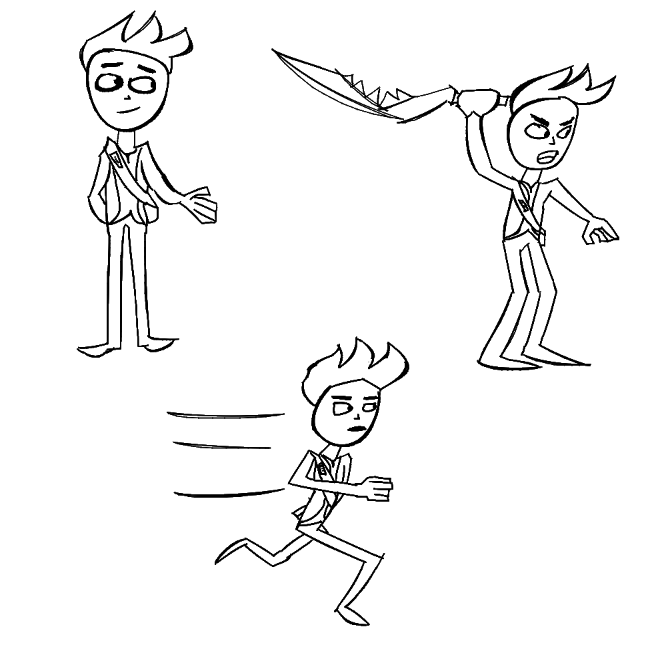
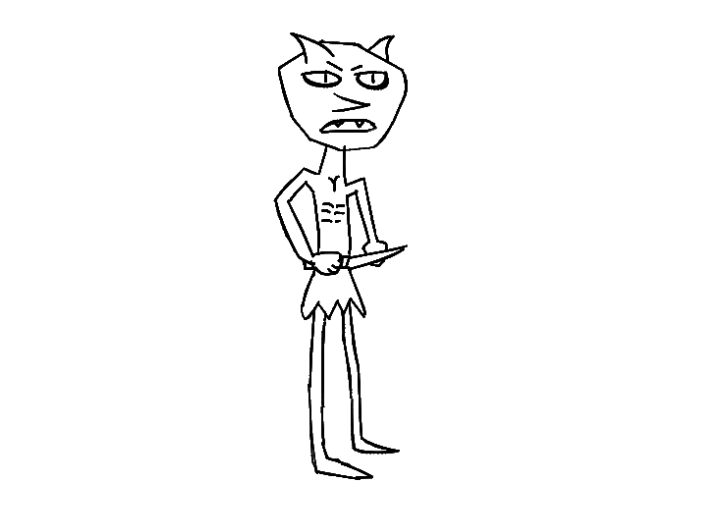

Hey! Tonight I did some creative work and wanted to post it ^^
So, I feel like for the past while I've been creatively struggling to find a direction. It's like... creation is the meaning of my life, and when I do it I feel so fulfilled! But, there's always that question of what to create, ya know?
I should tell you a bit about myself first, I think. My name's Josh and I've been a game developer for quite a while! That said, I've never made anything big, mainly just small game jam projects for my itch.io page. But I've always loved stories, art, music, all of it! Which doesn't really fit, given the fact I'm studying software engineering, but never in a million years would I imagine myself working for some big software company as my future. I want to start my own game development studio! Or atleast something to feed my creative side.
Anyways, I've been struggling for a while to figure out what I want to do. Which I think is something a lot of people can relate to, probably. For the past few months I've been trying to narrow down what it is my creative spark is drawing me towards. I mean, I've never made something which I would say has truly fulfilled me, ya know? I honestly have a lot to share about my experience with creative frustration, but I think I'll leave that for another blog post someday.
So, I really was trying to narrow down what it is I wanted to make. I was looking at so many different creative works, creatiing a vision board, and journalling with Claude as a creative soundboard. And though I've gone through a lot of articulations, I think the core feelings have sort of remained the same since the start. I want to create a beautiful world that's alive, with the player living a story inside of it. It's really taking a lot of self-restraint to keep on topic, I just want to talk about my creative journey!!!
But no, like I said, that's a blog post for another day. So, what actually is this blog post meant to be? Ah yes - an art update! I've done some thinking and I think I want to create a vast world, with the player playing as a guildmaster, gathering heroes, leading them, making connections and managing their guild. Starting from nothing and working their way up. But there's still a lot of things to figure out. Like - are the heroes going to be premade characters, hand designed? Or will they be procedurally generated? There's pros and cons to both, and honestly I have no idea. But, I ended up designing one character anyways. Potentially the first hero you stumble across. I call him "Jay" - and he's quite a hot head.

I also made a little goblin for him to fight :3

Overall there's still a lot to experiment with, think about, and do. But, having something like this to work on makes every other aspect of my life feel so much more meaningful! It feels like I can properly live when there's some creation going on, if that isn't a weird thing to say. Well, maybe it is, but that's okay ^^.
Thanks for reading this far. I hope you enjoyed the post, though this one was a bit rambley. They're probably only going to get worse from here on out so might aswell get used to it bahaha. Anyways, have a good day, night, or whatever time it is, wherever you are. And I'll see you in the next one :)